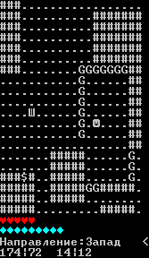
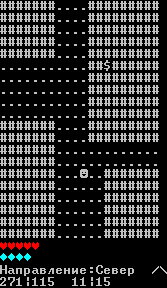
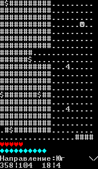

На неё у меня не было особых идей, всё начиналось как эксперимент.
Я захотел научиться отображать всякие локации в текстовом окне, так как
абсолютно не переваривал (как и сейчас) работу с мудрёными графическими
библиотеками. Спустя абсолютно немалого кол-ва попыток всё удалось, но
у меня уже появился лёгкий азарт. Я выбил камеру из рамок комнатки с
ништяками, и мир стал больше. Появились различные механики которые
делали эксперимент ярче и шире. Я назвал эту игру "GLINOMES". Её база
была столь широкой, что давала просторы для добавления туда чего угодно.
Но была проблема- всё держалось в рамках лишь текстового окна и заданных
ограничений, без которых эксперимент обрушится. При попытке добавления
алгоритмов искуственного интеллекта для "грибов с НОЖКАМИ", всё увенчалось
весьма сомнительным успехом. Взаимодействие с игроком было минимальным,
алгоритм тупил, а те грибы-копатели (флавусы) вообще ломали игру спустя
всего-лишь 200-1000 итераций. При попытке исправления этих проблем,
алгоритмы ИИ всех грибов были фатально повреждены, что превратило грибы
буквально в овощей.
Всё добил крайне неактуальный язык- FreePascal. Он годился лишь для
создания несложных проектов (например, "FON"), а для такой мясистой
игры требовалось что-то покруче.
И тогда я начал переносить эту игру на C. Хорошо всё шло лишь только в
начале, ведь при продолжении возникали непреодолимые трудности.
В итоге, игра была заморожена. Эксперимент хоть и прошёл неплохо, но
хотелось всё-таки чего-то большего от себя. Грустно.



Я решил передать этот движок в его последнем виде сюда, может быть кому-то он даже зайдёт? Увидим.
GLINOMES ENGINE V0.6